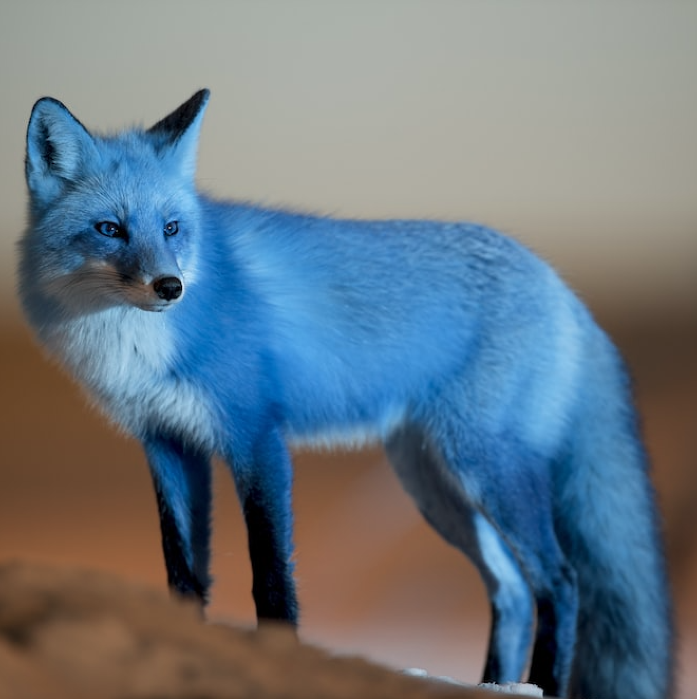
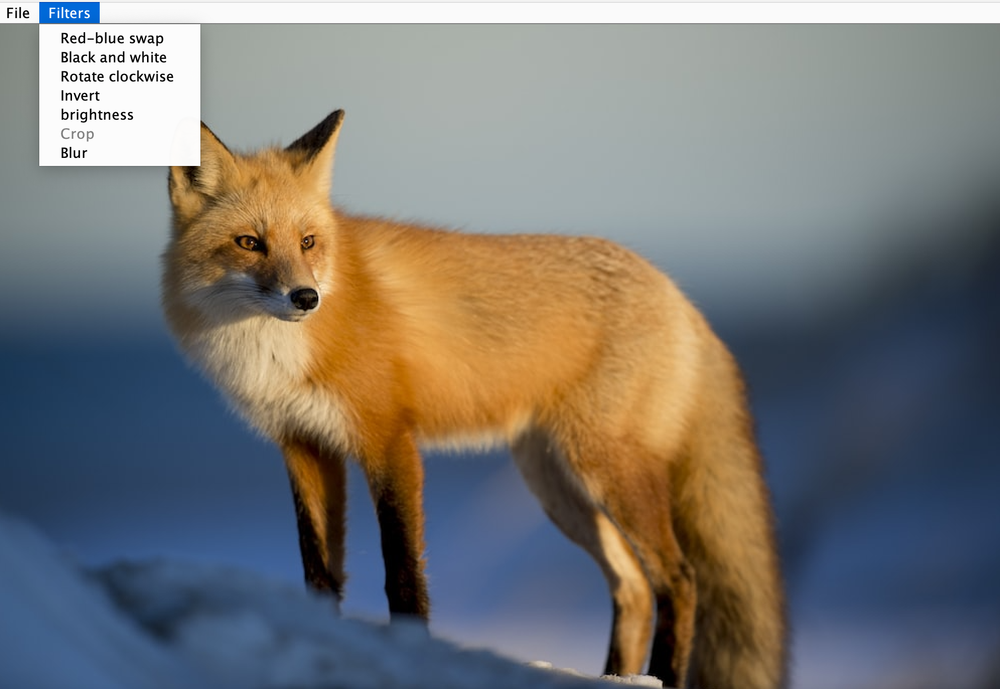
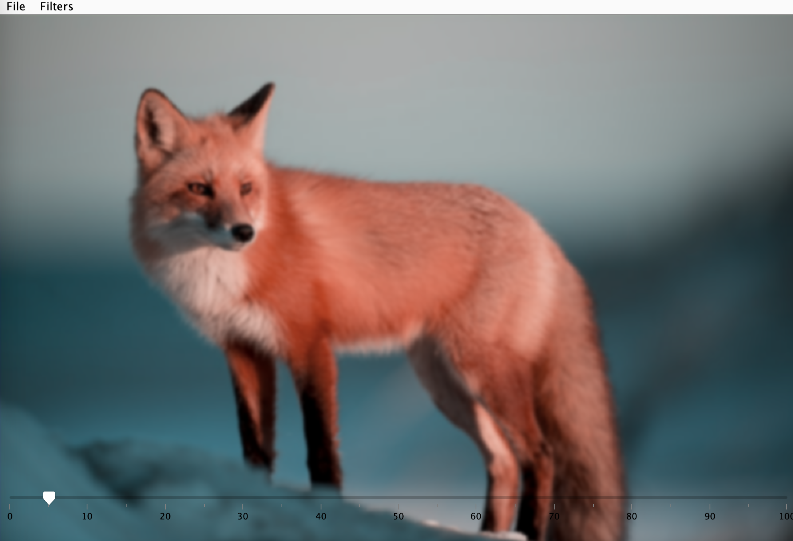

IntelliJ and Java
In the realm of digital creativity and image manipulation, I undertook a captivating personal project known as the 'Image Processor.' Developed within IntelliJ using Java, this project serves as a versatile tool for users to import images and apply a wide array of filters, culminating in the ability to save their modified masterpieces. The project boasts an intuitive Java-based graphical user interface (GUI) that simplifies the image processing experience, making it accessible to users of all skill levels.
At the core of the 'Image Processor' are a collection of filters designed to transform and enhance images. The first among these is the 'Red-Blue Swap' filter, a unique feature that artfully swaps all red pixels with blue, and vice versa, resulting in captivating color inversions that breathe fresh life into images. Continuing the creative journey, the 'Black and White' filter provides a pathway to monochromatic artistry. With a click, users can transform their images into timeless black and white representations, reminiscent of classic photography.
For those seeking artistic inversion, the 'Inverse' filter presents a captivating alternative. This filter inverts the color values across the image, creating a visual effect akin to photographic negatives. The 'Brightness' filter offers the ability to increase the luminance of images, enhancing the overall illumination and bringing out hidden details. This dynamic tool allows users to precisely control the image's luminosity.
In addition, the 'Image Processor' project introduces a 'Crop' filter, empowering users to customize the size of their images, making it possible to focus on specific areas or aspects of a photograph. To further explore the realm of visual aesthetics, the project features a 'Blur' effect with a user-friendly slider. Users can adjust the intensity of the blur to suit their artistic vision, from subtle softening to more pronounced effects.
For the creative freedom to reorient their images, users can employ the 'Rotate' feature, rotating their images 90 degrees counter-clockwise, enabling fresh perspectives and unique compositions.
After the transformational journey through filters, the 'Image Processor' provides a convenient 'Save' function, allowing users to preserve their modified images as distinct works of art. This personal project showcases the power of Java and its versatility in image processing, offering an accessible and engaging platform for users to explore their creative potential.